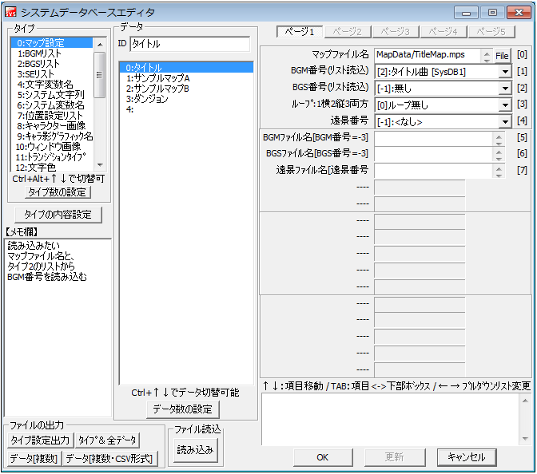

システムデータベース 【各タイプの説明】
システムデータベースの各タイプの設定内容について説明します。

全24からなるタイプと、それらの持つデータ項目について説明します。
[タイプ0 マップ設定]
マップの情報を保存します。
・マップファイル名 … マップファイル名（mpsファイル）を指定します。
・BGM番号 … BGM番号をシステムDB1番から指定します。
・BGS番号 … BGS番号をシステムDB2番から指定します。
・ループ … ループの設定をします。
0：ループ無し 1：横ループ 2：縦ループ 3：縦横ループ
[タイプ1 BGMリスト / タイプ2 BGSリスト]
ゲームで使用するBGM、BGSを登録します。
・ファイル名 … サウンドのファイル名を指定します。
・再生音量 … 音量を指定します、0にするとデフォルトになります。
・再生周波数 … 再生周波数をHzで指定します。0にするとサウンドの周波数と同じになります。
・ループ開始位置 … サウンドが最後まで再生されたとき、ループを開始する位置をミリ秒単位で指定します。
[タイプ3 SEリスト]
ゲームで使用する効果音を登録します。
・ファイル名 … タイプ2と同じ。
・再生音量 … タイプ2と同じ。
・再生周波数 … タイプ2と同じ。
・メモリ解放 … SE再生完了後、メモリから解放するかどうかを指定します。1にすると再生直後にメモリ解放します。滅多に再生されないSEファイルは1にしておくと良いでしょう。
なお、-1にするとゲーム開始直後にSEを読み込みます。（Ver2.20現在は機能していません）
※ちなみに、マップを移動すると全てのSEがメモリ解放されます
[タイプ4 文字変数名]
文字列変数の名前を登録（データ名に入力）したり、文字列変数の数を増やしたり（データ数を増加）できます。
[タイプ5 システム文字列]
システム文字列の名称がツール開発者側によって登録されています、ユーザ側で変更する必要はありません。
[タイプ6 システム変数名]
システム変数の名称がツール開発者側によって登録されています、ユーザ側で変更する必要はありません。
[タイプ7 位置設定リスト]
「移動先の登録機能」で登録された位置がここに保存されます。
・マップID … マップIDをシステムDB0番から読み込みます。
・X座標 … 移動先のX座標です。
・Y座標 … 移動先のY座標です。
[タイプ8 キャラクター画像]
「動作指定」でキャラクター画像を変更する際、変更画像はここから読み込まれます。
・読込ファイル名 … 変更するキャラクター画像のアドレスを指定します。
[タイプ9 キャラ影グラフィック名]
・読込ファイル名 … 影グラフィック画像のアドレスを指定します。
[タイプ10 ウィンドウ画像]
文章表示のポーズ画像(データ0)、選択肢ウィンドウ画像(データ1)、選択肢カーソル画像(データ2)を指定します。
・画像ファイル名 … 使用する画像ファイルのアドレスを指定します。
・縦分割数 … 画像を縦に何分割するかを指定します。分割数がすなわちアニメーション枚数になります。
※縦分割数が有効なのは「文章表示のポーズ画像(データ0)」と「選択肢カーソル画像(データ2)」のみです。
[タイプ11 トランジションタイプ]
トランジション（イベントコマンド「イベント制御」）のタイプを登録します。
・ファイル名（モノクロ） … トランジション画像のアドレスを指定します。トランジション画像はグレースケール（白黒）画像でなければなりません。
[タイプ12 文字色]
ゲーム中に使用できるフォントの色を指定します。
・赤（0-255） … 赤色の強さを指定します。
・緑（0-255） … 緑色の強さを指定します。
・青（0-255） … 青色の強さを指定します。
→ 255,255,255にすると真っ白、0,0,0にすると真っ黒です。
※システム側で使用されるデータがあります。
データ0番：デフォルト文字色
データ10番：文字のキーボード入力時の色
データ11番：キーボード入力時、変換中の背景色
データ12番：キーボード入力時、下線の色
データ13番：ルビ（特殊文字\r[]）のルビの文字色
[タイプ13 遠景画像]
遠景・およびフォグの画像を登録します。ゲーム中で使用する際は、システム変数61（フォグ番号）および66（遠景番号）を変更するとその瞬間から切り替わります。
・画像ファイル名 … 遠景/フォグの画像アドレスを指定します。
・X移動速度 … X方向への自動移動速度を指定します。
・Y移動速度 … Y方向への自動移動速度を指定します。
※遠景/フォグ画像は解像度以上のサイズでなければなりません（たとえば解像度320x240なら画像サイズも320x240以上でなければならない）
[タイプ14 通常変数名]
通常変数の変数名を指定（データ名＝変数名）、および変数の最大数を変更できます（データ数の増加）。
[タイプ15～23 予備変数1～9]
各予備変数の変数名を指定（データ名＝変数名）、および変数の最大数を変更できます（データ数の増加）。
[タイプ24 顔グラフィック名]
このタイプのデータ名は、「文章の表示」時に確認できます。基本的に、それ以外の用途では使いません。
・顔画像ファイル … 顔の画像ファイルを登録する項目ですが、これに関してはコモンイベント側でこれを表示するイベントを設定しなければ表示できません。